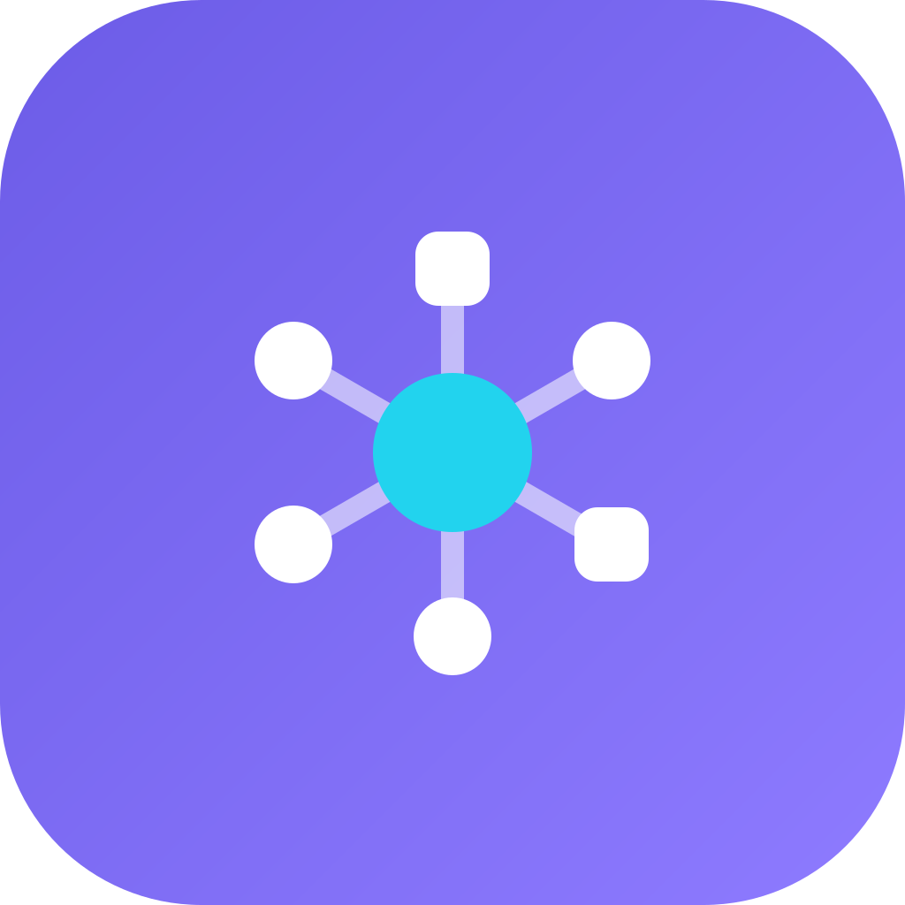
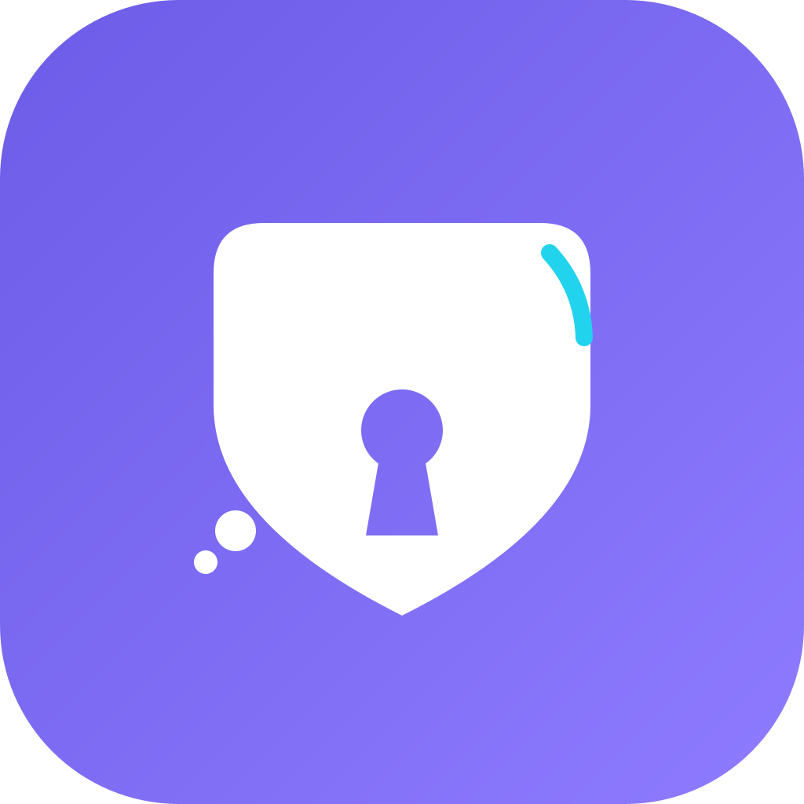
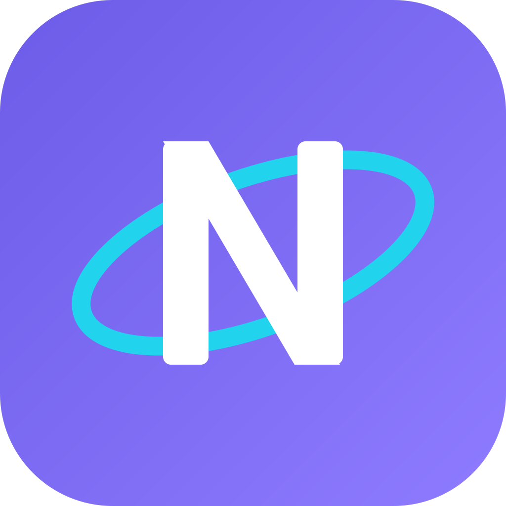

三套候选，同一个品牌底色（#6C5CE7 → #8E7BFF 渐变、#22D3EE 强调）。
右侧小尺寸列用来检查 16 / 32 / 48 px 下是否还认得出来 —— 这是图标最容易翻车的地方。
design/logo/nexuschat.svg，各平台圖示由
tool/gen_app_icons.py 生成（python tool/gen_app_icons.py），
已覆蓋 Android / iOS / macOS / Windows / Web 共 39 個檔案。
B、C 兩套保留在本頁作為設計紀錄。



| 平台 | 现有文件 | 处理要点 |
|---|---|---|
| Android | android/app/src/main/res/mipmap-*/ic_launcher.png | 自适应图标：前景图形（安全区 66%）+ 渐变背景；另出 Android 13 单色版 |
| iOS | ios/Runner/Assets.xcassets/AppIcon.appiconset/ | 满幅无圆角、不留透明，圆角由系统裁切 |
| macOS | macos/Runner/Assets.xcassets/AppIcon.appiconset/ | 圆角 + 内部留白约 80% |
| Windows | windows/runner/resources/app_icon.ico | ICO 内嵌 16/24/32/48/64/128/256，16px 用简化版 |
| Web / PWA | web/favicon.png、web/icons/、manifest.json | favicon 用简化版；另出 maskable 版（安全区 80%） |
| 托盘 / 单色 | SVG | 每套都要配一个单色描边版 |
拍板后我会用脚本从 1024 SVG 源批量导出各平台尺寸，保证多端一致；每个平台的小尺寸都会单独出一版简化稿。